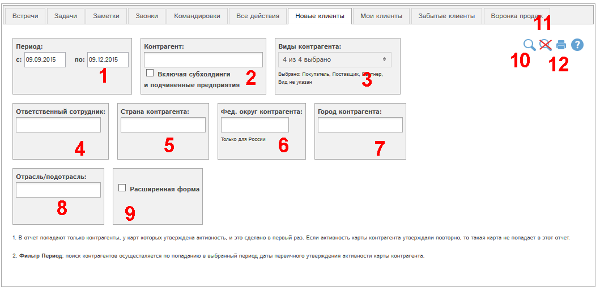

Отчет позволяет получить список контрагентов, у карт которых утверждена активность, и это сделано в первый раз. Если активность карты контрагента утверждали повторно, то такая карта не попадает в этот отчет.

Рис. Форма отчета Новые клиенты.
Доступны следующие фильтры и кнопки:
- Период - контрагенты отбираются по попаданию в выбранный период даты первичного утверждения активности карты контрагента.
- Отбор по заданным контрагентам. Галочка "Включая субхолдинги и подчиненные предприятия" позволяет выбрать в отчет также данные по субхолдингам и подчиненным предприятиям выбранных контрагентов.
- Отбор по виду контрагентов
- Отбор по ответственному сотруднику
- Отбор по стране контрагента
- Отбор по федеральному округу контрагента. Функция доступна только для России. При выборе федерального округа автоматически выбирается страна Россия.
- Отбор по городу контрагента
- Отбор по отрасли/подотрасли контрагента
- Расширенная форма отчета - позволяет включить в отчет ИНН, КПП и справочник контактов контрагентов
- Показать отчет по выбранным фильтрам
- Сбросить все фильтры
- Получить печатную версию отчета по выбранным фильтрам в pdf-формате.
Рассмотрим пример отчета, запросив расширенную форму и только партнеров. Для этого выберем пункт Партнеры в поле (3), отметим галочку (7) и нажмем кнопку  :
:
По всем основным колонкам отчета доступна сортировка. Для сортировки по определенной колонке кликните по кнопке  или
или  в соответствующей колонке таблицы.
в соответствующей колонке таблицы.